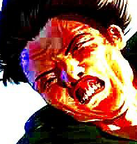
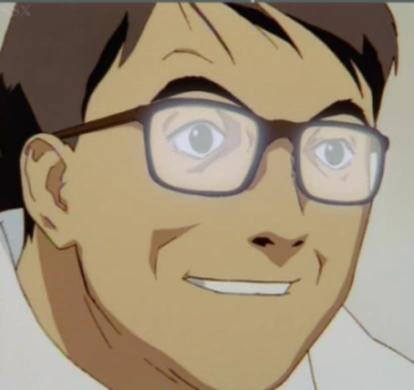

But that's to be expected since the way I dress and the music I make are inspired by anime
Season 1: I know where this is going! ...Season 2-4: NO THE FUCK I DON'T
Written by Gen Urobuchi, this may be one of the most beautiful and wholesome animes I've ever seen... Alright I'm getting waaay ahead of myself, let me explain:
We follow the life of a young school girl, Madoka, who's saved by a mysterious Magical girl after having entered a very weird place known as "Labyrinths"
These labyrinths are created by witches and they may be one of the most wacky bizarre things I've ever seen.
After being saved by a magical girl, a cute little cat-like creature known as "Kyubey" gives Madoka the chance to become a Magical Girl! ...
Alright on a serious note now, Gen Urobuchi is NOT your usual scriptwriter. He wrote shit like Fate/Zero and Psycho-Pass.
People nicknamed him Uro-butcher for a reason, so you can kind of guess what kind of anime Madoka Magica is...

The animation is beautiful as fuck (tho it can get kinda low cost at times) and the soundtrack is SO GOOD.
Legit everytime I get new headphones I test them with Madoka music.
Also the Rebelion movies left me questioning my existance, and Magia Record: Side Story was hella amazing too!
ANYWAYS it's a fucking amazing anime and I recommend it for everyone. Fucking 10/10
So basically we have this girl named Yui, she's about to enter highschool and her childhood friend is like "You gotta join a club" or some shit.
So Yui checks out the "Light Music Club" thinking she's going to play the maracas or smth, but it's actually a neat little rock band.
Everyone in the band wanted Yui to join (she radiates hella cool energy not kidding) because if they don't get more than 3 members they're forced to disband (School's regulations).
The music fucking slaps and the animations looks fucking gorgeous.
Also I noticed the way they play their instruments is drawn correctly! Guitar, bass, piano AND drums. Huge respect.
Here we following the story of a young cute male, Takumi Fujiwara, who drives his father's Toyota Trueno to deliver tofu to some hotel lost in god knows where.
The thing is, Takukumi isn't your ordinary UPS delivery guy...

Turns out Takumi is a very experienced driver and has been drifting on the roads of Mount Akina since he was fucking 13.
The funny thing is that Takumi dislikes racing, the dude is only trying to do his job.
The problem is that he's WAAAAY too good at doing it and that attracts the attention of numerous street racers.
Soon enough Takumi is challenged to race against all kinds of people driving all kinds of cars: RX-7, Skyline GTR, a fucking Civic, Lan Evo, Impreza... You name it!

Over time, Takumi begins to like racing and he comes up with wacky ways to race and overtake his competition.
Dude isn't even afraid of redlining his Trueno, he's got a neat little car and he's pushing it to the max!
I FORGOT TO MENTION THE MUSIC. Eurobeat fucking slaps. This anime got me into Eurobeat and it has become one of my favourite genres of all time.
It's funny and exciting. I give this anime a solid 9/10
Here we're following the story of two high schoolers: Kousei, who's a fucking great pianists,
and Kaori, who's a literal angel playing the violin and emanates extreme chaotic energy.
The thing is, both of them have to deal with severe traumas, past and future. They both connect musically and spiritually to escape from said traumas.
Actually, I don't think I'm doing enough justice to both these characters... Kousei is a fucking machine, if you give him a sheet of music he's going to play it 100% accurately.

Kaori is the complete opposite, she'll eventually make her own stuff up.
DON'T GET ME WRONG, she's fucking amazing at playing the violin, gives it a fuck ton of emotion and IT FITS SO WELL.

The problem is that... Actually, I'll let you figure out the rest of the anime since it's hard NOT to spoiler anything!
The animation is beautiful as fuck and the music... I'm not a classical listener, but the pieces here make me want to headbang to the point my neck disjoints lmao
Just like K-On, the way they play their instruments is drawn correctly, which is an amazing feat considering the type of music played here.

If you want to see a nice little tear jerker anime I recommend watching this one. I give it a well deserved 9/10.
Alright so here we're following the story of a kid, Shinji Ikari, who is totally not severely depressed and totally doesn't have parent issues not at all!

....Maybe just a little.
GOD DAMN IT from where do I even start... So the earth is fucked, there's been a second impact (first one being the funny dinosaurs meteor) and half the earth population is fucked.
And on top of all, there are these creatures called "Angels" and they want to fuck up earth even further.
Shinji feels obligated to prevent a third impact from happening, so he fights these aliens using an "Eva" which is kind of like a gigantic organic robotic mess of a thing.

Our protagonist is Tomoko: Weirdo ass girl, VERY introverted and has EXTREME social anxiety.
She went on her life to somehow fuck everything up, hell she couldn't even properly talk to the only friend she had.
Bitch went so crazy once she started talking to herself in the mirror.
Alright maybe I'm being WAY too harsh on the poor girl. AT LEAST she's trying to become a better person, and surprisingly she's succeeding at it...
In the on-going manga ofc.
Ah fuck we're here to talk about the anime, right... Even as cringy as this can get, I really like this fucking piece of anime.
It can get relatable at times and I don't know how to feel about that. 7/10
I hope they make a season 2 of the anime because her character development in the manga is really fucking beautiful. ❤️

In a nutshell, Lain is a very awkward girl and her father is the embodiment of 🤓 jkjk let me start again

Lain recieves an email from a student that commited suicide not too long ago.
Turns out, the chick that commited suicide wasn't 100% dead since she transfered her consciousness or some shit to The Wired (The Internet but way more bizarre).
Lain starts to become more interested in computer stuff and gets caught up in some weird ass events and a bunch of cryptic shit.

Soon enough we find out that the line that separates The Wired and real life beggins to dissapear and a bunch of shit occurs and I don't understand this anime.
Also, the opening gives me extreme nostalgia for some reason.

So here we're following the story of a young hot male who recently acquired a very special Nissan Fairlady S30Z... Also Known as The Devil Z.
It is said that the people who drive The Devil Z fall under its curse and end up getting in strange accidents...
Well I say that the dude who tuned the car must have smoked a blunt or two.
OFC our young hot male, Akio, doesn't give a fuck about that and tries to drive the Z as fast as possible (probably against his own will).

He tries to compete with a heavily modified Porsche 911 Turbo driven by a doctor, who was previously friends with the past owner of the Devil Z.
Also there's a Nissan Skyline GTR driven by a TV Hoster and a Ferrari Testarossa driven by a photographer.
Really shows that it doesn't matter what your profession is, no one is stopping you from driving dangerously fast cars!

The OST slaps and the animation was made by the same studio that produced Initial D Fourth Stage, so if you loved Initial D you'll probably like this one too.
Overall I give it a neat 7/10
No really, get away from this anime